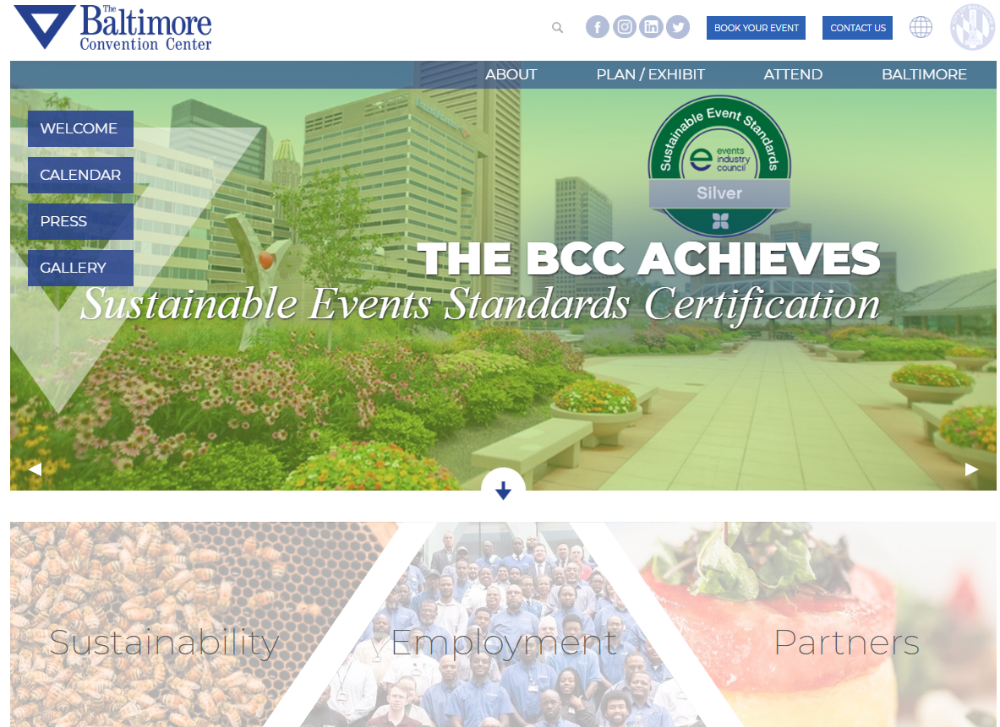

Website Information
- Website Name
- The Baltimore Convention Center
- URL
- https://www.bccenter.org/
- Target Audience
- The site is designed for event hosts and attendees, job seekers, and those generally seeking information about the Baltimore Convention Center.
- Accessibility Checker
- This site was given a score of 35.
- Website Organization Type
- Hierarchical Organization
- Highlighted C.R.A.P. Principle
- There is a lot of repetition to be found here. There is a color theme maintained throughout the entire site. The headers share the same fonts as the main text but uses a blue color to differentiate itself. I especially like the choice for the link hover color the site uses. It's a beautiful green that contrast with the links' simple white text.
Site Exploration
Navigating the BCC website was easy. The homepage is laid out in such a way that users can quickly find what they're looking for. The site lends itself well to its place in the convention industry by making it easy for attendees to find necessary directions, parking, transportation, and calendar information within less than five clicks.
The choice of blue and white matches the organization's color motif but it can at times be difficult on the eyes. I believe this is because of the chosen font size and thickness. The audit score breakdown showed "blind" the most in its "disabilities affected" column, which becomes apparent when trying to read the site's text. My suggestion would be to choose a thicker font and increase the font size. It's great that there is an accessibiity menu in the top-right corner with several options to make the pages easier to read, but things should be easier to read by default.
Despite some visual issues, this website is well built. It loads quickly and allows users to access necessary information with minimal clicks. While it's easy to find that information, seeing it can be difficult due to the text, so I suggested increasing the font size and it's thickness.